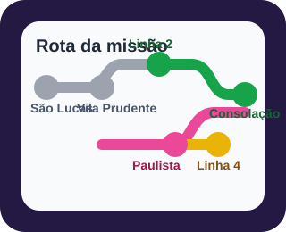
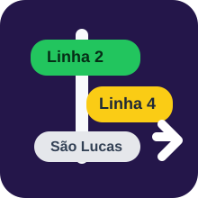
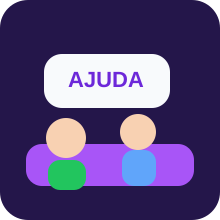

Olhe sempre o nome da estação nas placas e no trem.

Seu caminho
Saída: São Lucas → troca na Vila Prudente → seguir na Linha 2-Verde até Consolação → andar até Paulista → pegar a Linha 4-Amarela sentido Vila Sônia.
Prata
Verde
Caminhada
Amarela
Dicas rápidas
Coisas simples que ajudam muito durante o caminho.

Procure as cores: Prata, Verde e Amarela.
Na Consolação, siga as placas para a Paulista / Linha 4-Amarela.
Depois do primeiro acesso, o site continua funcionando sem internet.
Se ficar em dúvida
Respire fundo e use este plano.

- Peça ajuda a um funcionário da estação.
- Mostre a tela do celular com o próximo passo.
- Confirme a cor da linha antes de entrar no trem.